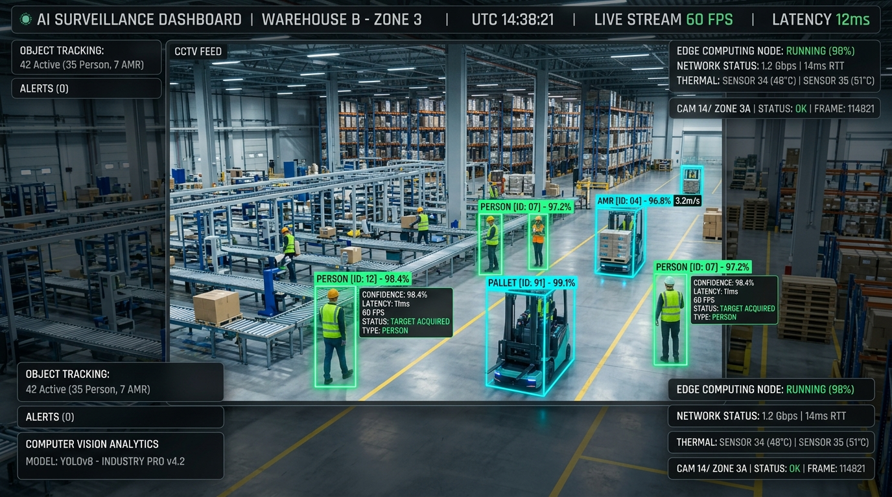
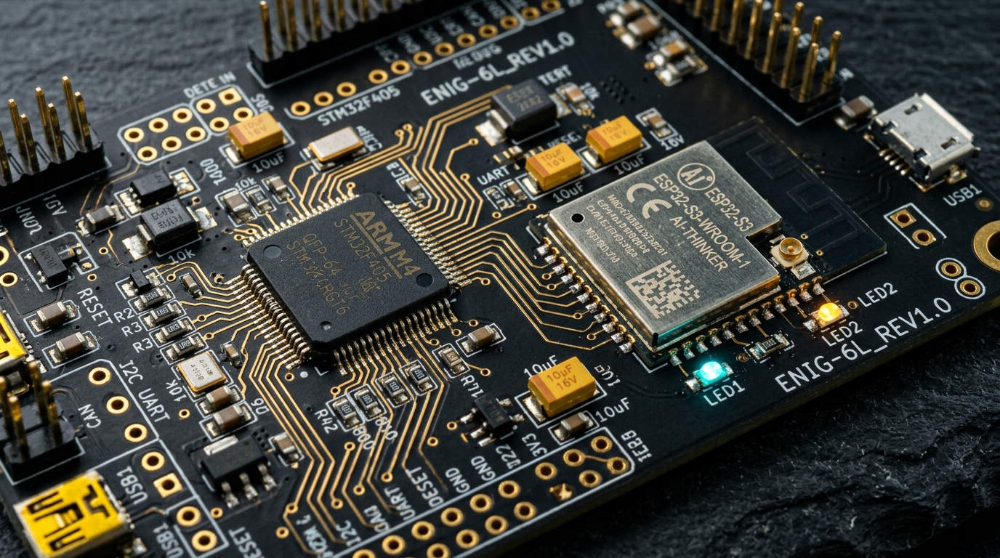
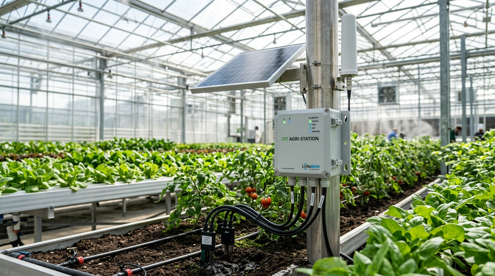
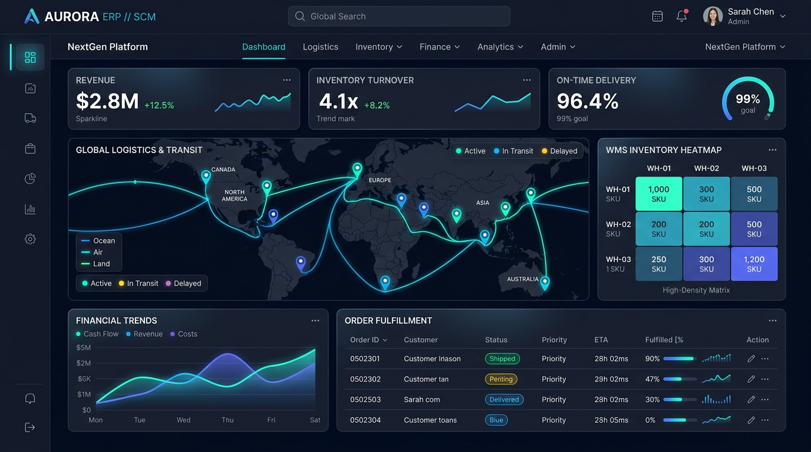
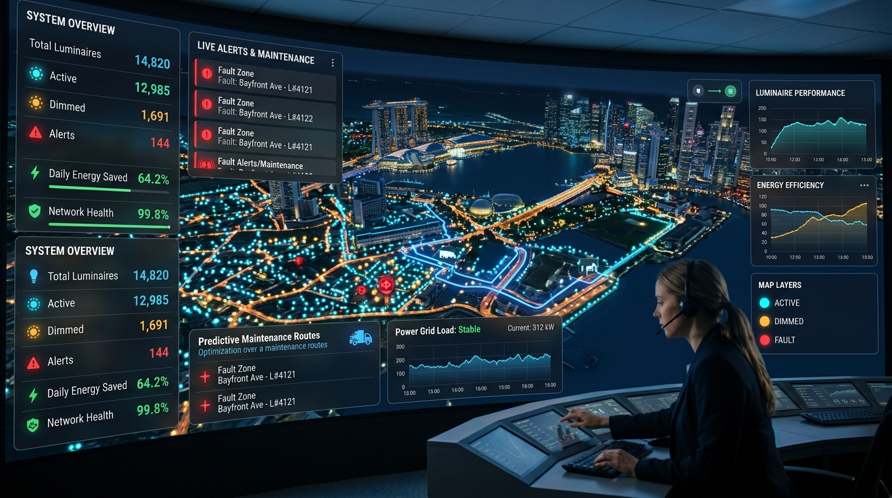
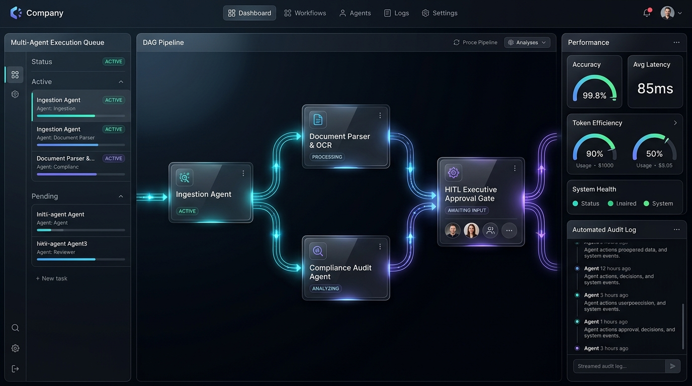
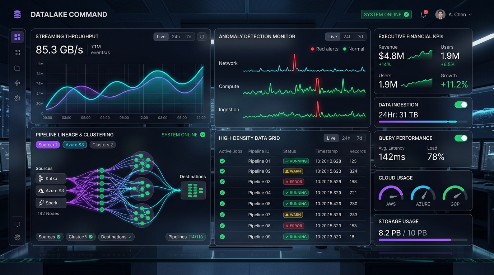
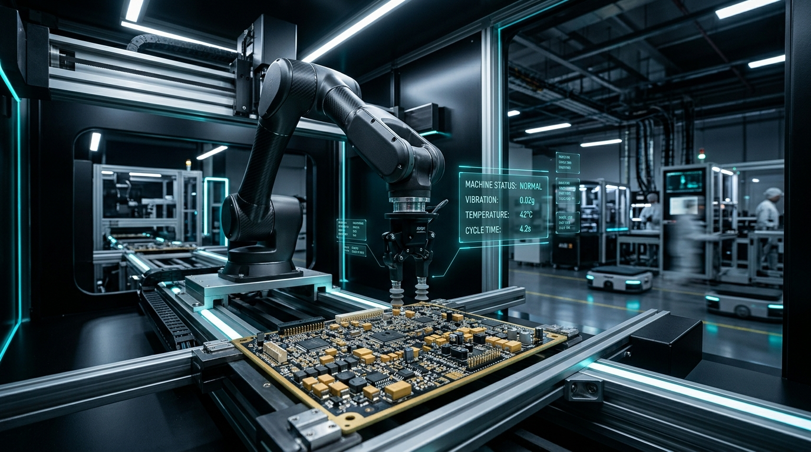

Studio phần mềm · Tokyo & Vietnam
Mizsoft kết hợp sự tinh tế của nghệ thuật Nhật Bản với sức mạnh công nghệ đột phá — tạo ra những phần mềm thực sự mang lại giá trị cho người dùng.
Từ ý tưởng đến production — chúng tôi đồng hành xuyên suốt hành trình chuyển đổi số của bạn.
Phân tích hình ảnh & video thông minh thời gian thực tại biên. Nhận diện vật thể, giám sát dây chuyền sản xuất và an ninh với độ trễ dưới 20ms.

Thiết kế mạch in vi sai đa lớp chuẩn công nghiệp, tối ưu toàn vẹn tín hiệu SI/PI, firmware nhúng và tạo mẫu thử nghiệm nhanh.

Hạ tầng kết nối phần cứng vạn vật viễn trắc, trạm quan trắc nông nghiệp tự động SmartFarm và điều khiển chiếu sáng công nghiệp SmartLight.

Xây dựng hệ sinh thái phần mềm quản trị doanh nghiệp toàn diện: quản trị kho vận, chuỗi cung ứng và tự động hóa quy trình nghiệp vụ chuyên sâu.

Dự án Tiêu biểu
Computer Vision · Edge AI
Phân tích video AI thời gian thực tại biên trên NPU, nhận diện vật thể, giám sát dây chuyền và cảnh báo an ninh tức thì.
Hardware R&D · KiCad EDA
Thiết kế bo mạch vi sai đa lớp 4-8 lớp, tích hợp STM32WLE5 LoRa & ESP32-S3 Gateway, firmware nhúng độ trễ cực thấp.
Smart Agriculture · IoT
Hệ thống quan trắc vi khí hậu, cảm biến đất NPK/pH/EC và tự động hóa chu trình tưới tiêu châm phân chính xác qua LoRaWAN.

City GIS · -64% kWhSmart City · Automation
Hệ thống quản lý và điều khiển chiếu sáng công nghiệp quy mô lớn, giám sát năng lượng và tích hợp bản đồ GIS realtime.
Enterprise Software
Hệ thống quản trị nguồn lực doanh nghiệp theo Clean Architecture: tối ưu kho vận, tự động hóa kế toán và chuỗi cung ứng mở rộng.

Multi-Agent · HITLAI Agents · Enterprise
Hệ thống Multi-Agent AI tự trị đọc hiểu văn bản, hóa đơn, hồ sơ và tự động hóa quy trình nghiệp vụ với cơ chế HITL an toàn.

85 GB/s Lake · KafkaData · Analytics
Data Lake + BI Dashboard real-time giúp ban lãnh đạo ra quyết định dựa trên dữ liệu chính xác tức thì.

Industry 4.0 · SCADAIoT · Industrial Automation
Hệ thống giám sát và điều khiển thiết bị nhà máy thông minh với độ trễ dưới 20ms, uptime 99.99%.
UI/UX Design · IoT Dashboard
Giao diện giám sát nông trại hữu cơ IoT: cảm biến đất, tưới tự động, sức khoẻ vườn — thẩm mỹ mộc mạc, hiện đại.
Triết lý
Mỗi dòng code đều được viết như tác phẩm nghệ thuật. Không có chỗ cho bug, không có ngoại lệ về security. Kiến trúc bền vững cho 10 năm tới.
Sprint 2 tuần, release thực sự. Chúng tôi không bán thời gian — chúng tôi bán kết quả. MVP trong 6 tuần, production-ready trong 3 tháng.
Omotenashi — tinh thần phục vụ từ trái tim. Thấu hiểu sâu sắc business của bạn trước khi mở IDE. Partnership, không phải vendor.
Một cuộc gọi 30 phút có thể thay đổi hướng đi cho sản phẩm của bạn. Hoàn toàn miễn phí.